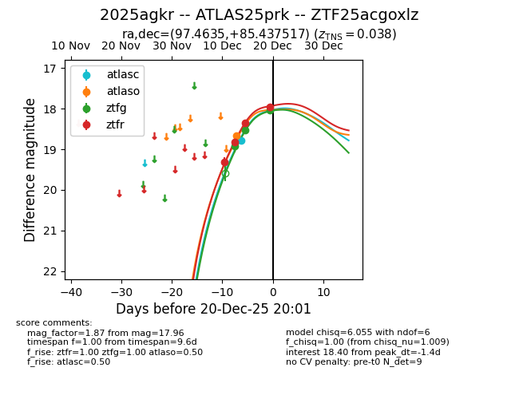
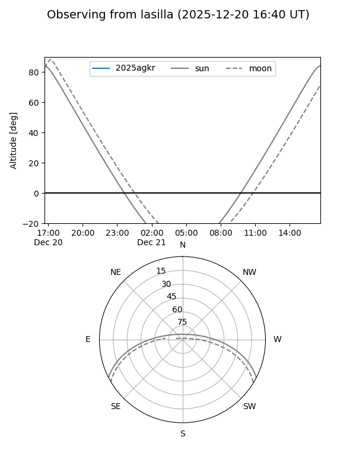

2025agkr
Target 2025agkr at 2025-12-23 09:27
Aliases and brokers:
FINK: fink-portal.org/ZTF25acgoxlz
Lasair: lasair-ztf.lsst.ac.uk/objects/ZTF25acgoxlz
ALeRCE: alerce.online/object/ZTF25acgoxlz
TNS: wis-tns.org/object/2025agkr
YSE: ziggy.ucolick.org/yse/transient_detail/2025agkr
alt names
ZTF25acgoxlz (ztf,fink_ztf)
2025agkr (tns,yse)
ATLAS25prk (atlas)
Coordinates:
equatorial (ra, dec) = 97.4635,+85.43752
equatorial (HMS+DMS) = 06:29:51.24,+85:26:15.06
galactic (l, b) = (128.0135,+26.60784)
Flags:
Photometry:
last atlasc=18.02, atlaso=18.67, ztfg=17.94, ztfr=17.83
3 atlasc, 1 atlaso, 4 ztfg, 5 ztfr detections
Lightcurve

Visibility


Additional plots